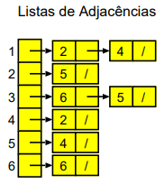
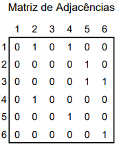
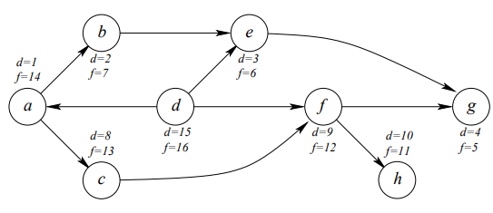

Introdução aos Grafos
Capitulo ?
Os grafos dirigidos têm uma direção associada a cada arco. Já os grafos não dirigidos têm arcos sem uma direção associada, ou seja, o arco (A, B) pode ser atravessado de A para B ou de B para A. Existem duas maneiras de representar grafos:- Através de listas de adjacências (bom para resolver grafos esparsos). 
- Através de matrizes de adjacências (bom para resolver grafos densos, ou seja, grafos onde quase todos os vértices estão ligados aos restantes). 
Ordenação Topológica
Capitulo ?
É uma ordenação de todos os vértices tal que se existe um arco (A, B), então A aparece antes de B na ordenação. Ou seja, a ordenação fica de forma a que os vértices que não tem mais arcos para explorar são os últimos na ordenação.Exemplo: DFS (Depth-First Search)
Capitulo ?
Grafo pesquisado dando prioridade aos arcos dos vértices mais recentemente visitados. color[v]: cor do vértice v, (branco, cinzento ou preto) branco: não visitado cinzento: já visitado, mas algum dos adjacentes não visitado ou procura em algum dos adjacentes não terminada preto: já visitado e procura nos adjacentes já terminada π[v]: predecessor de v na árvore DF d[v]: tempo de início (de visita do vértice) f[v]: tempo de fim (de visita do vértice) Exemplo:| 1º | Todos os vértices a BrancoTempos de início e fim = 99Predecessores = nulo |
Pseudocode
function BREADTH-FIRST-SEARCH(problem) returns a solution, or failure
node ←a node with STATE = problem.INITIAL-STATE, PATH-COST = 0
if problem.GOAL-TEST(node.STATE) then return SOLUTION(node)
frontier ← a FIFO queue with node as the only element
explored ← an empty set
loop do
if EMPTY?(frontier ) then return failure
node ← POP(frontier ) /* chooses the shallowest node in frontier */
add node.STATE to explored
for each action in problem.ACTIONS(node.STATE) do
child ← CHILD-NODE(problem, node, action)
if child.STATE is not in explored or frontier then
if problem.GOAL-TEST(child.STATE) then return SOLUTION(child)
frontier ← INSERT(child,frontier )
Code
#include <stdio.h>
int main() {
printf("Hello World");
return 0;
}
Image
 Russell, S. and Norvig, P., 2009, Artificial Intelligence: A Modern Approach 3rd ed,
Pearson
Russell, S. and Norvig, P., 2009, Artificial Intelligence: A Modern Approach 3rd ed,
Pearson